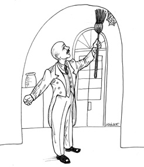

1. Chap31. THE WEB IS A DETAIL Web 是实现细节

Were you a developer in the 1990s? Do you remember how the web changed everything? Do you remember how we looked at our old client–server architectures with disdain in the face of the shiny new technology of The Web?
20 世纪 90 年代的时候，你已经是程序员了吗？还记得 Web 是如何改变一切的吗？你记得我们在有了崭新的 Web 技术之后，是如何鄙视那些老旧的客户端/服务器架构的吗？
Actually the web didn’t change anything. Or, at least, it shouldn’t have. The web is just the latest in a series of oscillations that our industry has gone through since the 1960s. These oscillations move back and forth between putting all the computer power in central servers and putting all computer power out at the terminals.
然而，Web 技术事实上并没有改变任何东西，或者说它也没有能力改变任何东西。这一次 Web 热潮只是软件行业从 1960 年来经历的数次震荡中的一次。这些振荡一会儿将全部计算资源集中在中央服务器上，一会儿又将计算资源分散到各个终端上。
We’ve seen several of these oscillations just in the last decade or so since the web became prominent. At first we thought all the computer power would be in server farms, and the browsers would be stupid. Then we started putting applets in the browsers. But we didn’t like that, so we moved dynamic content back to the servers. But then we didn’t like that, so we invented Web 2.0 and moved lots of processing back into the browser with Ajax and JavaScript. We went so far as to create whole huge applications written to execute in the browsers. And now we’re all excited about pulling that JavaScript back into the server with Node.
事实上，在过去十年内，或者说自 Web 技术被普遍应用以来，这样的振荡也发生了几次。一开始我们以为计算资源应该集中在服务器集群中，浏览器应该保持简单。但随后我们又开始在浏览器中引入 Applets-再后来我们又改了主意，发明了 Web 2.0，用 Ajax 和 JavaScript 将很多计算过程挪回浏览器中。我们先是非常兴奋地将整个应用程序挪到浏览器去执行，后来又非常开心地采用 Node 技术将那些 JavaScript 代码挪回服务器上执行。
(Sigh.)
一声叹息!
1.1. THE ENDLESS PENDULUM 无尽的钟摆
Of course, it would be incorrect to think that those oscillations started with the web. Before the web, there was client–server architecture. Before that, there were central minicomputers with arrays of dumb terminals. Before that, there were mainframes with smart green-screen terminals (that were very much analogous to modern-day browsers). Before that, there were computer rooms and punched cards …
当然，这些振荡也不是从 Web 技术开始的。在 Web 出现之前，这种振荡在客户端/服务器架构中就很普遍。再往前，就是中央小型机/瘦终端的模型（这里的瘦终端和现在我们所谓的现代浏览器非常相似）。再往前则是大型计算机与打孔卡……
And so the story goes. We can’t seem to figure out where we want the computer power. We go back and forth between centralizing it and distributing it. And, I imagine, those oscillations will continue for some time to come.
而且这样的故事还会继续下去，我们似乎永远也决定不了应该将计算资源放在哪里。我们不停地在集中式和分布式之间来回切换。看起来，这样的震荡还要再持续一段时间。
When you look at it in the overall scope of IT history, the web didn’t change anything at all. The web was simply one of many oscillations in a struggle that began before most of us were born and will continue well after most of us have retired.
但从 IT 技术发展历史的整体来看，我们会发现 Web 技术的出现并没有改变任何东西。Web 技术的热潮只是在这个早于我们出生，也肯定会超过我们职业生涯的振荡周期中的一瞬间。
As architects, though, we have to look at the long term. Those oscillations are just short-term issues that we want to push away from the central core of our business rules.
而且作为一名系统架构师，我们应该把眼光放长远一点，这些震荡只是端期问题，不应该把它们放在系统的核心业务逻辑中来考虑。
Let me tell you the story of company Q. Company Q built a very popular personal finance system. It was a desktop app with a very useful GUI. I loved using it.
下面，我们来聊聊 Q 公司的故事。该公司构建了一个非常流行的个人财务系统，这是一个 GUI 很好用的桌面程序，我很喜欢它。
Then came the web. In its next release, company Q changed the GUI to look, and behave, like a browser. I was thunderstruck! What marketing genius decided that personal finance software, running on a desktop, should have the look and feel of a web browser?
然后 Web 技术的热潮到来了，Q 公司打算在下一个版本中将该系统的 GUI 改成了浏览器风格。这真是犹如晴天霹雳！究竟是市场部哪位“大神”决定要让一个桌面版的个人财务软件展示浏览器风格的呢？
Of course, I hated the new interface. Apparently everyone else did, too—because after a few releases, company Q gradually removed the browser-like feel and turned its personal finance system back into a regular desktop GUI.
我当然非常痛恨新的 UI，显然其他人也这么认为——因此在随后的几个版本里，Q 公司又逐渐将浏览器相关的设计从界面中去掉了，最终这个软件又回到正常的桌面 UI 模式。
Now imagine you were a software architect at Q. Imagine that some marketing genius convinces upper management that the whole UI has to change to look more like the web. What do you do? Or, rather, what should you have done before this point to protect your application from that marketing genius?
假设你是 Q 公司的软件架构师，市场人员说服了高层管理者，要将整个 UI 重新设计为“Web”版。你应该怎么办？换句话说，在这类事情发生之前，我们应该提前做好哪方面的准备，才能应对这种无厘头的要求？
You should have decoupled your business rules from your UI. I don’t know whether the Q architects had done that. One day I’d love to hear their story. Had I been there at the time, I certainly would have lobbied very hard to isolate the business rules from the GUI, because you never know what the marketing geniuses will do next.
我们应该做的就是将业务规则与 UI 解耦。我不知道 Q 公司的软件架构师是否是这么做的，我也很想了解他们的故事。如果当时我在，我一定会全力游说他们将业务逻辑与 UI 解耦，因为谁知道市场推广人员接下来会想出什么好点子？
Now consider company A, which makes a lovely smartphone. Recently it released an upgraded version of its “operating system” (it’s so strange that we can talk about the operating system inside a phone). Among other things, that “operating system” upgrade completely changed the look and feel of all the applications. Why? Some marketing genius said so, I suppose.
再说一下 A 公司的故事，他们的产品是智能手机。最近他们发布了一个“操作系统”的升级版（谈论一个手机的操作系统本身就够奇怪的了！）。抛去别的改动不说，这次“操作系统”的更新大幅修改了各种应用程序的外观。为什么？估计是因为市场部某位“大神”的要求吧。
I’m not an expert on the software within that device, so I don’t know if that change caused any significant difficulties for the programmers of the apps that run in company A’s phone. I do hope the architects at A, and the architects of the apps, keep their UI and business rules isolated from each other, because there are always marketing geniuses out there just waiting to pounce on the next little bit of coupling you create.
我不了解这个设备中软件的细节，所以不知道这次改动是否显著影响了那些给 A 公司的手机开发应用程序的人。我只能希望 A 公司的系统架构师，以及应用程序的系统架构师能将 UI 和业务逻辑分离，因为这些市场推广人员是不会错过这里任何一丁点儿的耦合关系的。
1.2. THE UPSHOT 总结一下
The upshot is simply this: The GUI is a detail. The web is a GUI. So the web is a detail. And, as an architect, you want to put details like that behind boundaries that keep them separate from your core business logic.
将上面的故事总结成一句话，就是：GUI 只是一个实现细节。而 Web 则是 GUI 的一种，所以也是一个实现细节。作为一名软件架构师，我们需要将这类细节与核心业务逻辑隔离开来。
Think about it this way: The WEB is an IO device. In the 1960s, we learned the value of writing applications that were device independent. The motivation for that independence has not changed. The web is not an exception to that rule.
其实我们可以这样考虑这个问题：Web 只是一种 I/O 设备。早在 20 世纪 60 年代，我们就已经了解编写设备无关应用程序的重要性。这种独立性的重要性至今仍然没有变化，Web 也不例外。
Or is it? The argument can be made that a GUI, like the web, is so unique and rich that it is absurd to pursue a device-independent architecture. When you think about the intricacies of JavaScript validation or drag-and-drop AJAX calls, or any of the plethora of other widgets and gadgets you can put on a web page, it’s easy to argue that device independence is impractical.
是这样的吗？有人可能会辩称 Web 这样的 GUI 是非常特殊的，它能力强大，强大到让我们追求设备无关的架构变得毫无意义。当我们考虑到 JavaScript 数据校验的复杂程度、可拖拽的 Ajax 调用，以及无数可以轻松引入的设计组件时，很容易认为追求设备无关性是不现实的。
To some extent, this is true. The interaction between the application and the GUI is “chatty” in ways that are quite specific to the kind of GUI you have. The dance between a browser and a web application is different from the dance between a desktop GUI and its application. Trying to abstract out that dance, the way devices are abstracted out of UNIX, seems unlikely to be possible.
从某种程度上来说，的确如此。应用程序和 GUI 之间的频繁交互的确是与 GUI 的类型密切相关的。浏览器与 Web 应用之间的交互模式也的确与桌面客户端/服务器之间的交互模式区别很大。想要让浏览器上的 Web 操作模仿我们在 UNIX 中对 I/O 设备那样的操作，将其抽象成界面交互模型几乎是不可能的。
But another boundary between the UI and the application can be abstracted. The business logic can be thought of as a suite of use cases, each of which performs some function on behalf of a user. Each use case can be described based on the input data, the processing preformed, and the output data.
但我们其实可以从 UI 和应用程序之间的另一条边界出发来进行抽象化。因为业务逻辑可以被视为是一组用例的集合。而每个用例都是以用户的身份来执行某种操作的，所以它们都可以用输入数据、处理过程以及输出数据这个流程来描述。
At some point in the dance between the UI and the application, the input data can be said to be complete, allowing the use case to be executed. Upon completion, the resultant data can be fed back into the dance between the UI and the application.
也就是说，在 UI 和应用程序之间的某一点上，输入数据会被认为达到了一个完整状态，然后用例就被允许进入执行阶段了。在用例执行完之后，其生成的返回数据又继续在 UI 与应用程序之间传递。
The complete input data and the resultant output data can be placed into data structures and used as the input values and output values for a process that executes the use case. With this approach, we can consider each use case to be operating the IO device of the UI in a device-independent manner.
这样一来，完整的输入数据，以及完整的输出数据就可以被标准化为数据结构，并提供给执行用例的进程了。通过这种方法，我们就可以认为用例都是以设备无关的方式在操作 I/O 设备。
1.3. CONCLUSION 本章小结
This kind of abstraction is not easy, and it will likely take several iterations to get just right. But it is possible. And since the world is full of marketing geniuses, it’s not hard to make the case that it’s often very necessary.
这种抽象化处理并不容易，很有可能需要经历几个来回才能找到正确的方向，但这是完全可行的。由于世界上最不缺少的就是市场“大神”，很多时候做这些事情还真的是非常有必要的。